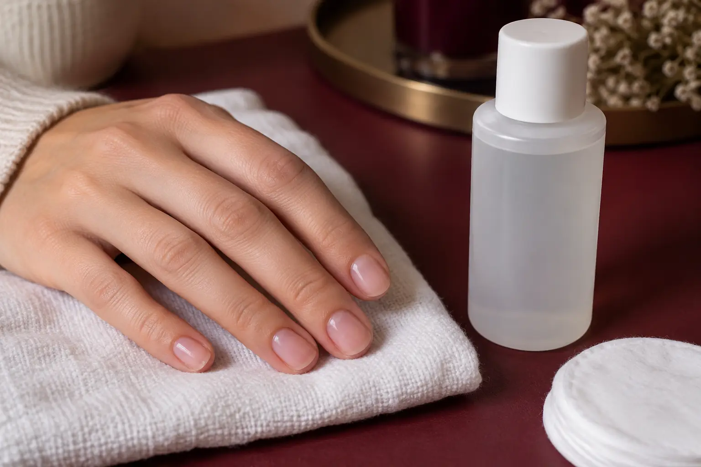

Nagų lako nuėmimas: paprasta danga, gelinis lakas ir naujas padengimas
Autorius: Madbeauty redakcija · Numatyta 2026 m. gruodžio 3 d. 10:00 (Lietuvos laiku)
Kada nuėmimas įtrauktas į naujo padengimo kainą, kaip atskirti įprastą laką nuo gelinio ir ką pasakyti, jei dangos nežinote.

Nagų lako nuėmimas gali būti atskira paslauga arba naujo padengimo dalis. Ką rinktis, priklauso nuo esamos dangos ir to, ką norite daryti po nuėmimo. Jei tai gelinis lakas, priauginimas ar nežinoma danga, įvardykite ją prieš rezervuodami ir pasitikrinkite, ar nuėmimas įtrauktas į pasirinktą paslaugą.
Pirmiausia įvardykite, kas dabar yra ant nagų
Įprastas nagų lakas ir gelinis lakas nėra tas pats paslaugos aprašas. Gelinis lakas kietinamas UV šviesa, todėl vien žodis „LED“ neįrodo, kad UV šviesa nenaudojama. Daugiau apie gelinį lakavimą ir jo priežiūrą skaitykite gelinio lakavimo gide. Amerikos dermatologų akademija taip pat pataria gelinės dangos nenulupti ar nenukrapštyti. AAD paaiškinimas apie gelinį manikiūrą.
- Jei ant nagų paprastas lakas, pasakykite tai ir paklauskite, ar jo nuėmimas įskaičiuotas į manikiūrą. Vien paslaugos pavadinimas ne visada parodo visą darbų apimtį.
- Jei tai gelinis lakas, nurodykite, ar norite tik jį nuimti, ar po to dengti naują sluoksnį. Tai gali būti atskiri kainyno variantai.
- Jei turite priauginimą, sustiprinimą ar nežinote, kokia medžiaga panaudota, taip ir pasakykite. Vieno teikėjo meniu, pavyzdžiui, priauginimą aprašo kaip atskirą paslaugą su nurodyta apimtimi ir dizaino pasirinkimais; tai nėra tas pats, kas gelinio lako nuėmimas. Room for nails paslaugų meniu
Nuėmimas gali būti atskirai įkainotas
Viename konkrečiame pavyzdyje, 2026 m. spalio 9 d. peržiūrėtame Vili Nails meniu, aparatinis manikiūras su geliniu lakavimu be nuėmimo kainavo 43 Eur ir buvo numatytas 70 min. Su nuėmimu nurodyta 45 Eur ir 80 min. „Maxi dailės“ variantuose meniu rodė atitinkamai 46 Eur ir 80 min. be nuėmimo bei 50 Eur ir 90 min. su nuėmimu. Vili Nails meniu Šis vieno meniu pavyzdys parodo, kad nuėmimas gali keisti paslaugos kainą ir trukmę. Tai nėra Lietuvos kainų vidurkis ar visų salonų taisyklė.
Jei dangą uždėjo kitas teikėjas arba ji nežinoma
Pasakykite, ką apie dangą žinote: kokia paslauga buvo atlikta, kada maždaug ir ar norite po nuėmimo naujo padengimo. Jei žinote, kad tai priauginimas, sustiprinimas ar kita sistema, paminėkite tai atskirai. Nekrapštykite ir nenulupkite gelinės dangos patys; prieš rezervuodami paprašykite teikėjo patvirtinti, kuri paslauga tinka ir ar jai numatytas pakankamas laikas.
Trumpas pasiruošimas rezervacijai
- Įvardykite dabartinę dangą: paprastas lakas, gelinis lakas, priauginimas ar nežinoma.
- Pasakykite, ko norite po nuėmimo: likti be dangos ar iškart dengti naują. Jei norite kitos paslaugos ar ilgio, nurodykite ir tai.
- Pasitikrinkite, ar nuėmimas įskaičiuotas, kokia darbų apimtis numatyta ir kiek laiko skiriama. Jei dangos kilmė ar ankstesnis produktas nežinomi, nepasirinkite varianto remdamiesi vien pavadinimu.
Jei anksčiau buvo reakcija į nagų produktą, ją paminėkite prieš kitą padengimą. Europos Komisijos Vartotojų saugos mokslinis komitetas savo 2018 m. nuomonėje aptarė HEMA ir di-HEMA jautrinimo potencialą konkrečiomis naudojimo aplinkybėmis; tai nėra konkretaus produkto ar žmogaus individualus saugumo įvertinimas. SCCS nuomonė apie HEMA ir di-HEMA
Procedūrų aprašai kataloge: Nagų lakavimo nuėmimas. Miestą ir realaus teikėjo pasiūlymą pasirinkite kataloge, kai tokia pasiūla pateikta.
Susiję gidai
Šaltiniai
- Vili Nails · realių paslaugų variantai · www.treatwell.lt
- Room for nails · paslaugų apimtis · www.treatwell.lt
- AAD · gelinis manikiūras · www.aad.org
- SCCS · HEMA mokslinė nuomonė · health.ec.europa.eu